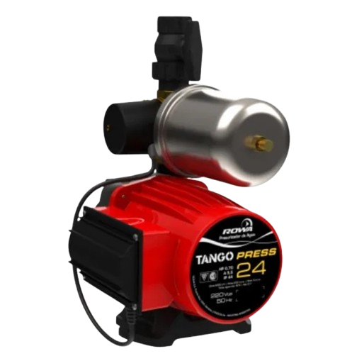

Revisión y diagnóstico
Identificamos fallas de presión, arranque, caudal o funcionamiento y te explicamos los pasos a seguir.
Consultar diagnósticoSERVICIO OFICIAL ROWA
Vendemos bombas de agua ROWA. También realizamos diagnóstico, reparación y mantenimiento especializado para que el agua vuelva a fluir con tranquilidad.
Servicio oficial ROWAAtención especializada en la marca
Diagnóstico claroTe orientamos antes de avanzar
Atención 24 hsConsultas y asistencia por WhatsApp
ATENCIÓN ESPECIALIZADA
Experiencia técnica para cuidar el funcionamiento de tu equipo ROWA en casa, comercio o consorcio.
Identificamos fallas de presión, arranque, caudal o funcionamiento y te explicamos los pasos a seguir.
Consultar diagnósticoServicio técnico oficial para recuperar el rendimiento de tu equipo con atención enfocada en la marca.
Consultar reparaciónAtención preventiva para revisar el estado de la bomba y acompañar su funcionamiento diario.
Consultar mantenimientoTECNOLOGÍA ROWA
Vendemos bombas de agua ROWA y trabajamos con distintos equipos para presión y abastecimiento de agua.

Asistencia técnica para equipos presurizadores de la línea Tango.

Revisión y reparación para mejorar la presión en las instalaciones.

Servicio para bombas elevadoras y equipos de abastecimiento.

Orientación técnica para equipos y soluciones de bombeo ROWA.
 Atención especializada ROWA
Atención especializada ROWA
EL RESPALDO QUE BUSCÁS
Somos Alto Voltaje, servicio oficial ROWA. Te acompañamos con atención especializada para tu bomba de agua, desde la primera consulta hasta la orientación sobre cómo resolver el problema.
SERVICIO TÉCNICO ROWA
Consultá por disponibilidad y atención en tu zona.